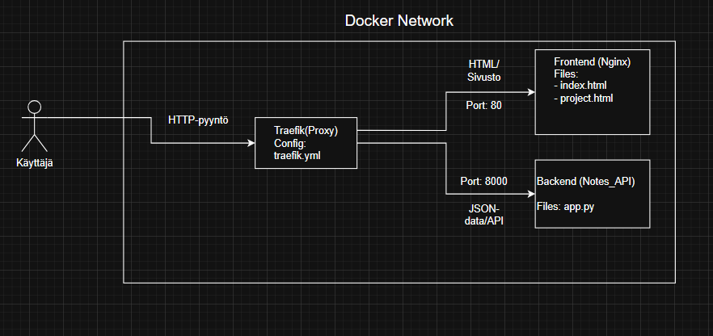
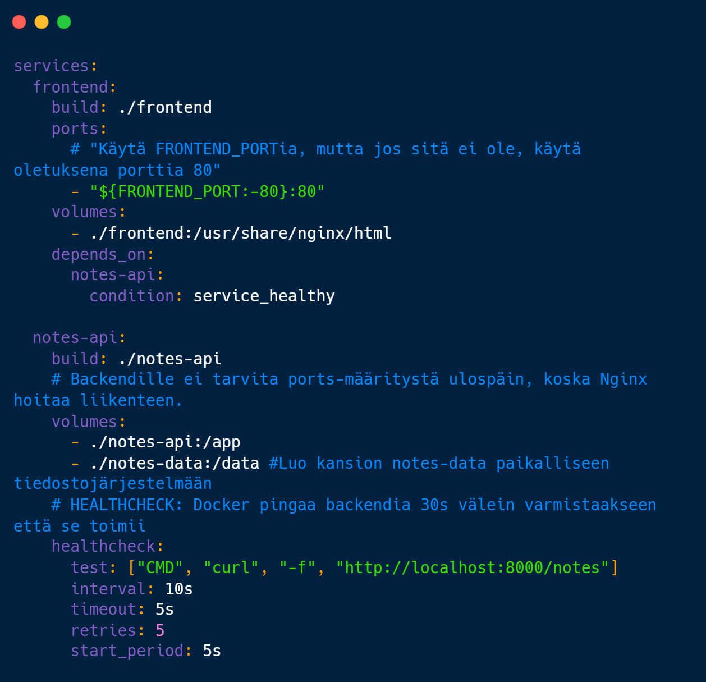

Tervetuloa kontteihin!
Projektimme demonstroi Dockerin, Nginxin ja FastAPI:n yhteistyötä.
docker compose up.
Järjestelmän Arkkitehtuuri

Palveluiden välisen liikenteen toiminta.
Teknologiat
Orkestrointi (docker-compose.yml)
Ote konfiguraatiosta, joka sitoo palvelut yhteen.
🚀 Pika-aloitusopas
Olet nyt sisällä Nginx-kontissa. Tämä sivu tarjoillaan portissa 80.
Taustalla pyörivät palvelut on määritelty docker-compose.yml -tiedostossa, ja ne kommunikoivat sisäisessä verkossa.
PowerShell
user@pc:~$ docker-compose up --build
Building frontend... done
Building backend... done
Creating network "app-net"... done
✔ Server running at localhost:80
Building backend... done
Creating network "app-net"... done
✔ Server running at localhost:80